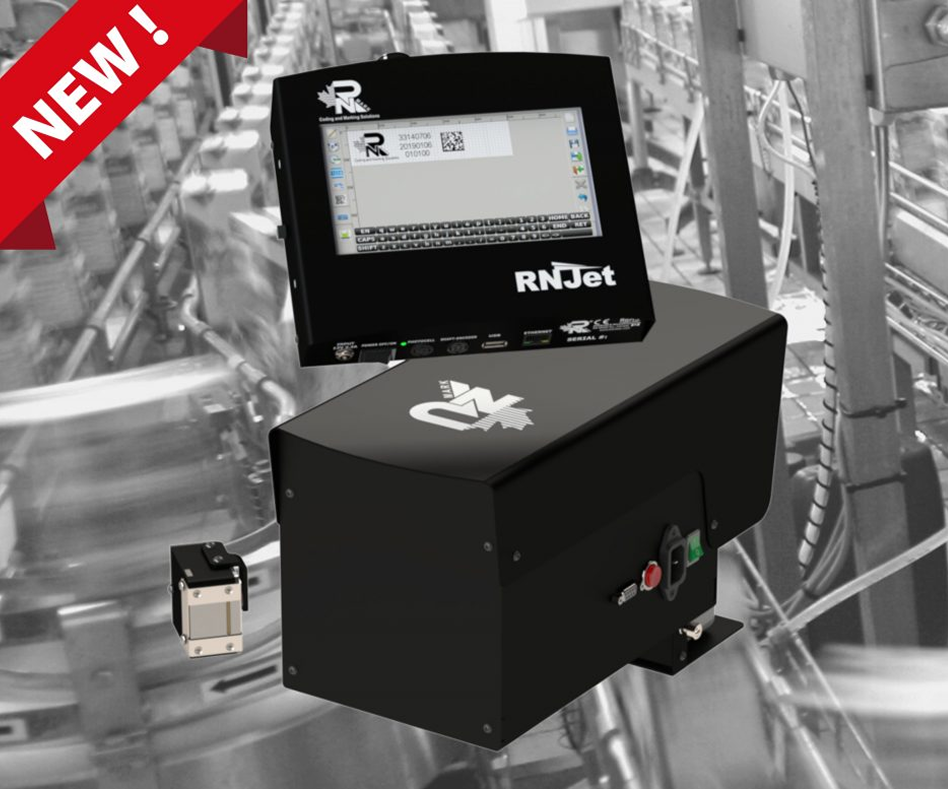

РЕШЕНИЕ ДЛЯ КОДИРОВАНИЯ И МАРКИРОВКИ
Промышленный струйный принтер
Струйные кодировщики для печати мелких символов
Принтеры с системой пакетной печати
Система для оптовой упаковки | Идеально подходит для первичной упаковки | Встраиваемые кодировщики
RNJet 100+
RNJet 100+ — это промышленный принтер высокого разрешения для печати мелких символов, обеспечивающий замечательные возможности кодирования и маркировки продукции.
RNJet 200+
RNJet 200+ — это промышленный кодировщик с двумя головками, высоким разрешением и малым количеством символов.
Принтеры с картриджной системой
Устройство для кодирования даты | Кодирование и маркировка мелкими символами

RNJet 100
RNJet 100 — это промышленный принтер высокого разрешения для нанесения мелкого шрифта, обеспечивающий замечательные возможности кодирования и маркировки продукции.
RNJet 200
RNJet 200 — это двухголовочный промышленный принтер с высоким разрешением, предназначенный для нанесения мелкосимвольных надписей, обеспечивающий замечательные возможности кодирования и маркировки продукции.
RNJet EP-6H+
RNJet EP-6H+ — это доступный по цене, высокоскоростной и высокоточный промышленный принтер для печати на яйцах.
RNJet 100 XL
Струйный кодировщик RNJet 100 XL — это высокоскоростной принтер для нанесения даты мелкими символами, обеспечивающий быструю маркировку и кодирование сухих продуктов с проверенной производительностью. Система кодирования и маркировки основана на картриджах объемом 430 мл.
RNJet 200 XL
RNJet 200 XL — это двухголовочный высокоточный высокоскоростной промышленный термопринтер для печати мелких символов, оснащенный картриджами объемом 430 мл для кодирования и маркировки.
RNJet H1+
Струйный кодировщик RNJet H1+ — это высокоскоростной принтер для нанесения дат мелким шрифтом и обеспечения высокой точности печати, позволяющий быстро и надежно кодировать и маркировать сухую продукцию.
RNJet H2+
RNJet H2+ — это двухголовочный высокоточный термопринтер для печати мелких символов, обеспечивающий быстрое кодирование и маркировку сухих изделий с проверенной производительностью.
RNJet H2 ST
Струйный кодировщик RNJet H2 ST — это высокоскоростной кодировщик даты с двойной шовной головкой, обеспечивающий быструю маркировку и кодирование сухих изделий с проверенной производительностью.
RNJet H4 ST
RNJet H2+ — это двухголовочный высокоточный термопринтер для печати мелких символов, обеспечивающий быстрое кодирование и маркировку сухих изделий с проверенной производительностью.
RNJet T1
Высокоскоростной струйный кодировщик Inkjet Coder RNJet T1 обеспечивает быструю сухую маркировку и кодирование продукции с проверенной производительностью. Высота печати до 1 дюйма.
RNJet T2 ST
RNJet T2 ST — это двухголовочный высокоскоростной промышленный термопринтер с высоким разрешением и возможностью печати крупных символов, обеспечивающий высоту печати до 50 мм (2 дюйма), быструю сухую маркировку и кодирование продукции с проверенной производительностью.
РЕШЕНИЕ ДЛЯ КОДИРОВАНИЯ И МАРКИРОВКИ
Промышленный струйный принтер
Крупноформатные промышленные печатные машины для печати символов
Принтеры с системой пакетной печати
Система для массовой печати | Идеально подходит для струйной печати крупными символами | Встраиваемые кодировщики
RNJetE1-72+
RNJET E1-72+ — это промышленный струйный принтер высокого разрешения для печати крупных символов.
RNJet E1-140+
RNJet E1-140+ — это промышленный кодировщик с двумя печатающими головками, высоким разрешением и возможностью ввода крупных символов.
Принтеры с картриджной системой
Устройство для кодирования даты | Кодирование и маркировка мелкими символами
RNJet 72
RNJet 72 — это промышленный струйный принтер высокого разрешения для печати на картонных коробках, а также промышленный кодировщик крупных символов.
RNJet 140
RNJet 140 — это промышленный принтер с высоким разрешением, двумя печатающими головками, высокой скоростью печати и крупными символами, обеспечивающий замечательные возможности кодирования и маркировки продукции.
RNJet 72 XL
RNJet 72 XL — это промышленный струйный принтер с картриджами (430 мл) для печати на картонных коробках и нанесения крупных символов.
RNJet 140 XL
RNJet 140 XL — это промышленный принтер высокого разрешения с двумя печатающими головками и картриджами, предназначенный для печати крупных символов и обеспечивающий превосходную производительность кодирования и маркировки продукции.
RNJet 288 XL
RNJet 288 XL — это промышленный струйный принтер с картриджами (430 мл) для печати на картонных коробках и крупноформатных промышленных кодировщиках. Высота печати достигает 288 мм.
RNJet 140 г. до н.э. (двуцветный)
RNJet 140 BC (двухцветный) — это промышленный принтер высокого разрешения с четырьмя печатающими головками и картриджами, предназначенный для печати крупных символов и обеспечивающий превосходные возможности кодирования и маркировки продукции.
Отрасли применения принтеров RN Mark.
- Автомобильный
- Напитки (в банках и бутылках)
- Потребительские товары в упаковке
- Электроника (печатные платы (PCB))
- Фармацевтическая промышленность (Уникальная идентификационная маркировка устройства (UDI))
- Изделия из пластмассы и резины (пластиковая пленка и листы, пластиковые и резиновые трубы и шланги)

Компания RN Mark Inc. — производитель промышленных струйных принтеров в Канаде. Более 20 лет мы с удовольствием разрабатываем и поставляем доступные и высокопроизводительные кодировщики по всему миру.
Контакты
ООО ИнСофтРитейл (ИНН 7325105104)
Адрес: РФ, г Ульяновск, ул. Рылеева, д.11, офис 4
Контактная информация
Телефон: +7 8422 58 63 70
E-mail: office@insoftretail.ru
Авторские права © 2022–2025 Все права защищены.